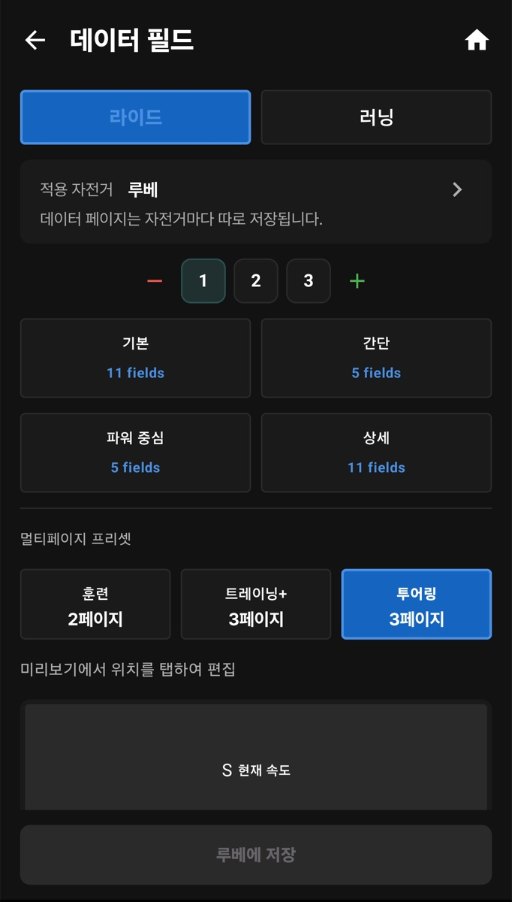
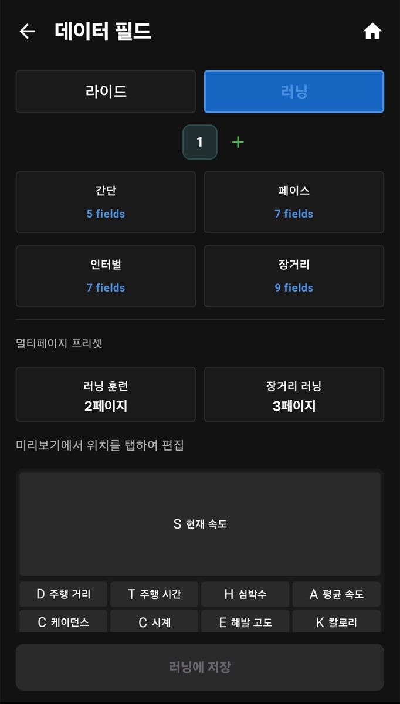
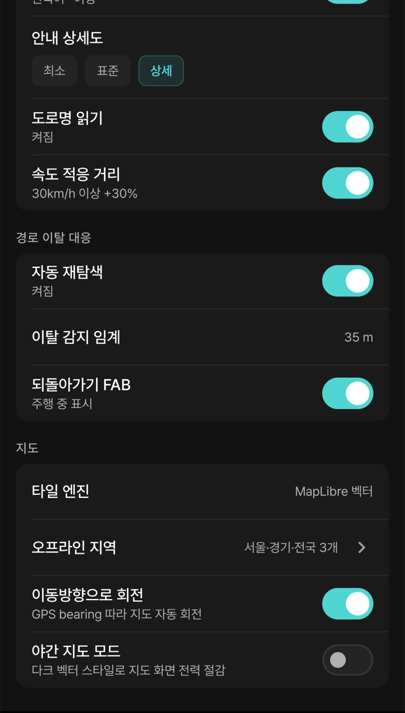

이 장의 설정은 모두 설정 > 화면(화면 제목 “주행/화면”)에서 시작합니다. 이 화면에는 주행 · 데이터 필드 · 네비게이션 · 사운드가 있습니다.


| 종목 | 한 페이지 프리셋 | 여러 페이지 프리셋 |
|---|---|---|
| 라이드 | 기본 · 간단 · 파워 중심 · 상세 | 훈련(2페이지) · 트레이닝+(3페이지) · 투어링(3페이지) |
| 러닝 | 간단 · 페이스 · 인터벌 · 장거리 | 러닝 훈련(2페이지) · 장거리 러닝(3페이지) |
| 분류 | 화면의 필드 이름 | 필요한 것 |
|---|---|---|
| 속도·페이스 | 현재 속도, 페이스, 평균 속도, 최고 속도, 속도 차이, 이전 랩 속도 | GPS 또는 속도 센서 |
| 거리·시간 | 주행 거리, 주행 시간, 경과 시간, 정지 시간, 시계, 칼로리 | — |
| 랩 | 랩, 랩 거리, 랩 시간, 이전 랩 | — |
| 심박 | 심박수, 평균 심박, 최대 심박, 심박 존 | 심박계 |
| 케이던스 | 케이던스, 평균 케이던스, 최대 케이던스 (자전거 rpm / 러닝 spm) | 케이던스 센서 / 휴대폰 걸음 감지 |
| 파워 (자전거) | 현재 파워, 평균 파워, 최대 파워, 가상파워, NP, IF, TSS, W'bal, 좌우 밸런스, 파워 존 | 파워미터 (가상파워는 속도·경사로 추정) |
| 고도 | 해발 고도, 경사도, 총 상승, 총 하강, VAM | — |
| 오르막·경로 | 등반 잔여, 등반 고도, 등반 경사, 등반 카테고리, 다음 등반, 남은거리, 남은 상승, 도착 예상 | 오르막 감지 / 불러온 경로 (6장) |
| 장비 (자전거) | 기어, 기어비, 변속기 배터리, 레이더, 차량 수, 캠 녹화버튼, 캠 사진 | 해당 장비 |
| 날씨 | 현재 온도, 풍속, 풍향, 강수량, 습도 | 네트워크 |
| 휴대폰 | 폰 배터리, GPS 정확도 | — |
| 그룹 | 가장 가까운 멤버, 가장 먼 멤버, 그룹 산개, 그룹 평균 심박 | 그룹 참여 (7장) |
Android 지도 설정은 설정 > 화면 > 네비게이션 화면 아래쪽 지도 구역에 있습니다. iOS iPhone은 설정 > 화면 > 디스플레이의 지도 구역입니다(0장 대응표).

| 항목 | 설명 |
|---|---|
| 타일 엔진 | 지도를 그리는 방식입니다. 보통은 처음 값 그대로 두면 됩니다. |
| 오프라인 지역 | 내비 경로 계산용 지역 파일. 6장 오프라인 지역을 보세요. |
| 이동방향으로 회전 | 내가 가는 방향이 늘 위쪽이 되도록 지도를 자동으로 돌립니다. 끄면 북쪽이 위입니다. |
| 야간 지도 모드 | 어두운 지도 스타일로 바꿔 화면 전력을 줄입니다. |
지도 종류 이름은 플랫폼마다 다릅니다.
설정 > 화면 > 사운드에서 정합니다. iOS 설정 > 화면 > 소리(0장 대응표).
| 항목 | 설명 |
|---|---|
| 사운드 사용 · 볼륨 | 전체 알림음 켜기와 크기 |
| 워크아웃 타겟 알림음 | 워크아웃 목표 범위를 벗어날 때 |
| 오르막 알림음 · 세그먼트 알림음 | 오르막·세그먼트 시작과 끝 |
| 커스텀 사운드 | 시작 · 종료 · 랩 · 오르막 시작 · 오르막 종료 · 레이더 알림 소리를 각각 변경 |
설정 > 주행 설정 > 임계치 알림에서 심박(bpm) · 파워(W) · 케이던스(rpm) · 속도(km/h)의 최소·최대값을 넣으면, 범위를 벗어날 때 알려 줍니다.
Android 설정 > 디자인 > 테마에서 기본 또는 고대비 (야외)를 고릅니다. 햇빛 아래에서 화면이 잘 안 보이면 고대비를 써 보세요. iOS iPhone에는 테마 설정이 없습니다.